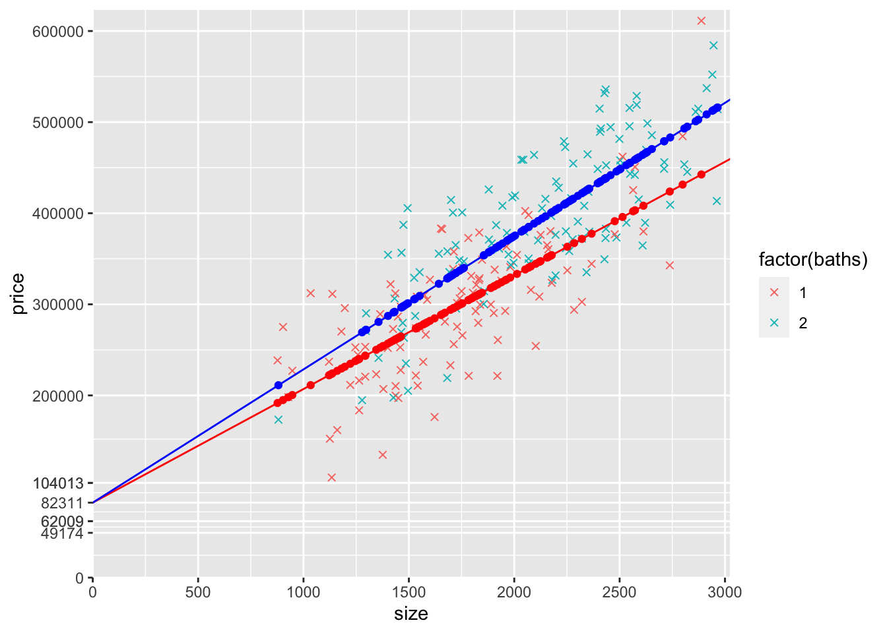
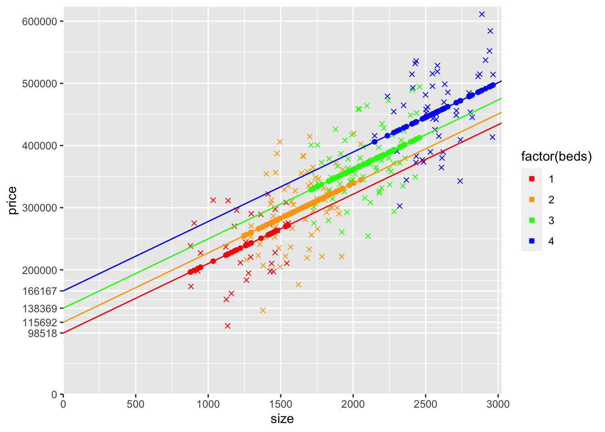
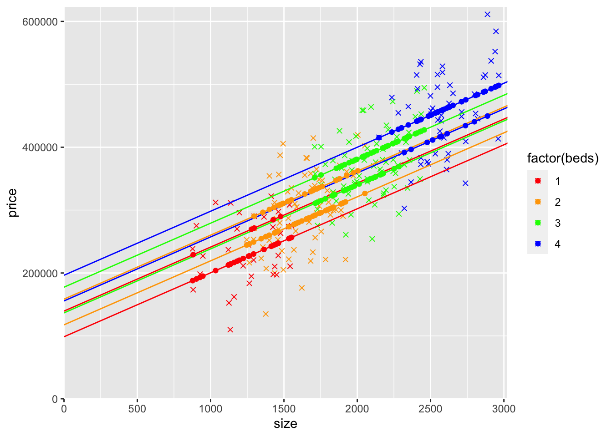

16 Dummy Variables Part 2
\[ \newcommand{\betahat}[1]{\hat{\beta}_{#1}} \]
This chapter uses the data in HousePriceDummies.csv with price of the house in dollars (price), size of the hose in square feet (size), number of bathrooms (baths), and number of bedrooms (beds).
This is the second chapter covering dummy variables. From this chapter you should learn about intercept dummies that allow the average \(y\) value to differ by group by the same amount for all values of the other explanatory variables. Intercept dummies are the most common use of dummy variables. You’ll create an intercept dummy from a numerical variable (baths) that only has two possible values, so while you’re working with a dummy variable, you’re actually just working with regression models you should already understand. THis hopefully helps you better understand how to work with all dummy variables, include those based on qualitative information.You should also learn about slope dummies that allow the slope to vary by group.
Wherever you see qCnt() in the RMD file you’ll see a number in the HTML output. qCnt() is a counter (defined in the code chunk above) that is putting what are essentially question numbers in the HTML output. This makes it easier to discuss with others because we can refer to the different questions by number.
16.1 Size only
1) In this first code chunk, first estimate the simple linear regression model of price on size and store it in modelS (that’s “model” and a capital letter “S” for “Size”). Then display modelS using pander. Next, add a variable yHatS to the mydatadata frame with the predicted price from modelS. Yes, R has a fitted() function to do this for you, but I want you to calculate it manually using:
\[ \hat{y} = \betahat{0} + \betahat{1}size \]
Finally, create a scatter plot of the data using the number of bathrooms (baths) as a factor for the color (we need factor() so it treats baths as distinct integers, 1 and 2, instead of a continuous variable that could have values like 1.234). We also include yHatS as a scatterplot and as a line (also using yHatS). Make sure you understand why all of the yHatS points are on the yHatS line. Throughout this chapter we’ll use an “x” symbol (ggplot’s shape=4) to display the data and dots (i.e., filled-in circles, ggplot’s shape=19, which is also it’s default) to display predicted prices (i.e., yHatS).
I filled this first one in for you.
modelS <- lm(price~size,data=mydata)
pander(summary(modelS))| Estimate | Std. Error | t value | Pr(>|t|) | |
|---|---|---|---|---|
| (Intercept) | 49174 | 15291 | 3.216 | 0.001502 |
| size | 154.4 | 7.645 | 20.19 | 1.826e-51 |
| Observations | Residual Std. Error | \(R^2\) | Adjusted \(R^2\) |
|---|---|---|---|
| 216 | 55363 | 0.6558 | 0.6542 |
mydata$yHatS <- coef(modelS)["(Intercept)"] + coef(modelS)["size"] * mydata$size
ggplot(mydata) +
geom_point(aes(y=price,x=size,col=factor(baths)),shape=4) +
geom_point(aes(y=yHatS,x=size,col=factor(baths))) +
geom_line(aes(y=yHatS,x=size),col="black")
2) A big part of our focus in this chapter is the regression lines, so let’s be more explicit about plotting the line. The line we plotted above used geom_line(aes(y=yHatS,x=size)). We could plot this same line using geom_smooth, but later we’re going to plot lines that don’t work easily with geom_smooth. Instead, we’re going to use use geom_abline() to plot a line using its intercept and slope. Recall that yHatS is:
\[
\hat{y} = \betahat{0} + \betahat{1}size
\]
so we need to use \(\betahat{0}=\) 49173.68 for geom_abline’s intercept argument and \(\betahat{1}=\) 154.37 for geom_abline’s slope argument. We’ll also expand the axes limits so we can see the y intercepts; to do this, we’ll include:
scale_x_continuous(expand = c(0, 0),limits = c(0, max(mydata$size)*1.02),breaks = seq(0,max(mydata$size)*1.02,500))
and
scale_y_continuous(expand = c(0, 0),limits = c(0, max(mydata$price)*1.02), breaks = seq(0,max(mydata$price)*1.02,50000))
ggplot(mydata) +
scale_x_continuous(expand = c(0, 0),limits = c(0, max(mydata$size)*1.02),
breaks = seq(0,max(mydata$size)*1.02,500)) +
scale_y_continuous(expand = c(0, 0),limits = c(0, max(mydata$price)*1.02),
breaks = seq(0,max(mydata$price)*1.02,50000)) +
geom_point(aes(y=price,x=size,col=factor(baths)),shape=4) +
geom_point(aes(y=yHatS,x=size,col=factor(baths))) +
geom_abline(intercept = coef(modelS)["(Intercept)"],
slope = coef(modelS)["size"],col="black")
3) The slope of yHatS is the effect of size (of an additional \(ft^2\)) on the predicted price from the model that only controls for size. What do you think will happen to the effect of size on the predicted price when we also control for baths?
Controlling for the number of bathrooms (baths) should reduce the effect of size on the predicted price. Assuming that more bathrooms are associated with a higher price and that higher size is predicted when there are more bathrooms (i.e., houses with more bathrooms tend to be larger), leaving the number of bathrooms out of the model causes omitted variable bias (a violation of the ZCM assumption, MLR.4) that makes it look like size has a larger effect on price than it really does when baths is not controlled for.
Note that omitted variable bias doesn’t always cause the coefficient to be larger (i.e., it could cause it to be smaller). In this case it’s larger because baths, size, and price are all positively correlated.
16.2 Number of bathrooms and size
4) Now add the number of bathrooms (baths) as a variable to the regression (in addition to size) and store the model as modelSB (“model” with “S” for size and “B” for baths). Display the output using pander. Add a variable yHatSB to mydata with the predicted prices from this model. Remember that for this model (the “SB” model that includes both size and baths), predicted prices are given by:
\[
\hat{y} = \betahat{0} + \betahat{1}size + \betahat{2}baths
\]
## Estimate regression
modelSB <- lm(price~size+baths,data=mydata)
pander(summary(modelSB))| Estimate | Std. Error | t value | Pr(>|t|) | |
|---|---|---|---|---|
| (Intercept) | 20004 | 15384 | 1.3 | 0.1949 |
| size | 136.3 | 7.944 | 17.16 | 5.014e-42 |
| baths | 42005 | 7841 | 5.357 | 0.0000002187 |
| Observations | Residual Std. Error | \(R^2\) | Adjusted \(R^2\) |
|---|---|---|---|
| 216 | 52094 | 0.6967 | 0.6938 |
## Store yHat for this model with size and baths
mydata$yHatSB <- coef(modelSB)["(Intercept)"] +
coef(modelSB)["size"] * mydata$size +
coef(modelSB)["baths"] * mydata$baths5) Now let’s add yHatSB to the graph as a scatterplot. Copy the last graph you made above, remove the geom_point() of yHatS, and add a geom_point() of yHatSB. Make the color “orange” for all the yHatSB points (i.e., the new geom_point() should be this: geom_point(data=mydata,aes(y=yHatSB,x=size),col="orange")).
ggplot(mydata) +
scale_x_continuous(expand = c(0, 0),limits = c(0, max(mydata$size)*1.02),
breaks = seq(0,max(mydata$size)*1.02,500)) +
scale_y_continuous(expand = c(0, 0),limits = c(0, max(mydata$price)*1.02),
breaks = seq(0,max(mydata$price)*1.02,50000)) +
geom_point(aes(y=price,x=size,col=factor(baths)),shape=4) +
geom_point(aes(y=yHatS,x=size,col=factor(baths))) +
geom_abline(intercept = coef(modelS)["(Intercept)"],
slope = coef(modelS)["size"],col="black") +
geom_point(data=mydata,aes(y=yHatSB,x=size),col="orange")
6) It looks like there are two upward-sloping parallel rows of yHatSB predicted prices. What accounts for the general upward slope of the yHatSB predicted prices? Why are there two rows (try looking at a count() of baths to help you answer this part of the question)?
The general upward slope of the yHatSB predicted prices is from the relationship of price with size. Because yHatSB is the predicted price controlling for both size and baths but we are graphing price (and predicted price) against size only, the predicted points are not a straight line. Houses with more baths have a higher predicted price. The yHatSB predicted prices are in two rows because there are only two different values of baths, 1 and 2.
mydata %>% count(baths)## baths n
## 1 1 102
## 2 2 1147) Look at the graph you just made. Notice that the yHatS line doesn’t go straight through the middle of the two rows of yHatSB predicted prices. What is the slope of the yHatS line (the answer is one of the coefficients estimated above)? What is the slope of the two rows of yHatSB predicted prices (the answer is a coefficient estimated above)? Which slope is steeper? What accounts for the difference between these different slopes?
The yHatS line has a slope of about 154.37 ft2 (the coefficient on size from the regression of price on size, i.e., modelS). The rows of yHatSB predicted prices have a slope of about 136.32 ft2 (the coefficient on size from the regression of price on size and baths, i.e., modelSB).
The yHatS line has a steeper slope than the rows of yHatSB predicted prices because the estimated effect of size on price is larger from the modelS that only controls for size than from the modelSB that also controls for baths.
That slope is also less steep because size and the number of bathrooms positively affect price, and size and the number of bathrooms are themselves positively correlated (i.e., larger houses tend to have more bathrooms).
8) How far apart vertically in the y direction (the price direction) are the two rows of yHatSB predicted prices? Why?
The higher row of yHatSB predicted prices are about $136.32 higher. This is the estimated effect of an additional bathroom on price (from the regression of price on size and baths). The lower and upper rows are for 1 and 2 bathroom houses consecutively.
9) Copy the code from the previous graph and then do the following:
Using only the coefficients from modelSB and the size variable (and simple arithmetic), generate a variable name yHatSB1 that when you plot it, replaces the lower row of yHatSB predicted price points. Make sure that these points are only created for observations with 1 bathroom and are NA for other observation (I’d use ifelse() for baths==1). Add these to the graph as geom_point() and make these dots red. Also add a geom_abline() that goes through this row of dots and make this line red.
Also using only the coefficients from modelSB and the size variable (and simple arithmetic), generate a variable name yHatSB2 that when you plot it, replaces the upper row of yHatSB predicted price points. Make sure that these points are only created for observations with 2 bathrooms and are NA for other observation (I’d use ifelse() for baths==2). Add these to the graph as geom_point() and make these dots blue. Also add a geom_abline() that goes through this row of dots and make this line blue.
In addition, remove the orange yHatSB points you added before (because you’ve replaced them with red points and blue points).
In mine, I also labeled the y-intercepts of the three lines (the black line that connects the yHatS points, the red line that connects the yHatSB1 points, and the blue line that connects the yHatSB2 points). Don’t waste much time trying to figure this out, but you should understand how the intercepts correspond with coefficients from the models.
mydata$yHatSB1 <- ifelse(mydata$baths == 1, coef(modelSB)["(Intercept)"] +
coef(modelSB)["baths"]*1 +
coef(modelSB)["size"]*mydata$size,
NA)
mydata$yHatSB2 <- ifelse(mydata$baths == 2, coef(modelSB)["(Intercept)"] +
coef(modelSB)["baths"]*2 +
coef(modelSB)["size"]*mydata$size,
NA)
## These labels the yAxis with the 3 y-intercept values, plus 0 and values from 200k to 600k in steps of 100k
yLabels <- c(0,unname(c(round(coef(modelS)[1],0),round(coef(modelSB)["(Intercept)"] + coef(modelSB)["baths"]*1,0),round(coef(modelSB)["(Intercept)"] + coef(modelSB)["baths"]*2,0))),seq(200000,600000,100000))
ggplot(mydata) +
scale_x_continuous(expand = c(0, 0),
limits = c(0, max(mydata$size)*1.02),
breaks = seq(0,max(mydata$size)*1.02,500)) +
scale_y_continuous(expand = c(0, 0),
limits = c(0, max(mydata$price)*1.02),
breaks = yLabels) +
geom_point(aes(y=price,x=size,col=factor(baths)),shape=4) +
geom_abline(intercept = coef(modelS)["(Intercept)"],
slope = coef(modelS)["size"],col="black") +
geom_point(data=mydata,aes(y=yHatS,x=size,col=factor(baths))) +
geom_point(data=mydata,aes(y=yHatSB1,x=size),col="red") +
geom_point(data=mydata,aes(y=yHatSB2,x=size),col="blue") +
geom_abline(intercept = coef(modelSB)["(Intercept)"]
+ coef(modelSB)["baths"]*1,
slope = coef(modelSB)["size"],col="red") +
geom_abline(intercept = coef(modelSB)["(Intercept)"]
+ coef(modelSB)["baths"]*2,
slope = coef(modelSB)["size"],col="blue")
10) Using ifelse(), create two dummy variables, baths1 and baths2, and add them to mydata. The variable baths1 equals 1 for houses with 1 bathroom and equals 0 otherwise. The variable baths2 equals 1 for houses with 2 bathroom and equals 0 otherwise. Make sure to look at the data after creating the variables to make sure you did it correctly (e.g., use head())! Calculate the mean of baths1 and baths2. What does the mean of baths1 tell us? What about the mean of baths2?
mydata$baths1 <- ifelse(mydata$baths == 1, 1, 0)
mydata$baths2 <- ifelse(mydata$baths == 2, 1, 0)
head(mydata,10)## price size beds baths yHatS yHatSB yHatSB1 yHatSB2 baths1 baths2
## 1 427923 2211 3 2 390491.9 405408.3 NA 405408.3 0 1
## 2 270778 1296 2 2 249240.8 280679.1 NA 280679.1 0 1
## 3 329174 1525 2 2 284592.2 311895.4 NA 311895.4 0 1
## 4 537281 2913 4 2 498861.6 501102.2 NA 501102.2 0 1
## 5 275112 903 1 1 188572.3 185102.1 185102.1 NA 1 0
## 6 390832 2302 4 2 404539.8 417813.1 NA 417813.1 0 1
## 7 405488 2132 3 2 378296.5 394639.3 NA 394639.3 0 1
## 8 402451 2052 2 1 365946.6 341729.3 341729.3 NA 1 0
## 9 279597 1471 2 2 276256.1 304534.4 NA 304534.4 0 1
## 10 337245 2252 3 1 396821.2 368992.5 368992.5 NA 1 0mean(mydata$baths1)## [1] 0.4722222mean(mydata$baths2)## [1] 0.527777847.2% of the houses from the data have 1 bathroom and 52.8% of the houses are 2 bathrooms.
11) Try estimating a regression (with price as the y variable) that includes size, baths1, and baths2. Call it model12. Display the output using pander, but also display coef(model12). What happens? Why? Hint: which of the 4 MLR assumptions is violated?
model12 <- lm(price~size+baths1+baths2, data = mydata)
pander(summary(model12))| Estimate | Std. Error | t value | Pr(>|t|) | |
|---|---|---|---|---|
| (Intercept) | 104013 | 17658 | 5.89 | 0.00000001487 |
| size | 136.3 | 7.944 | 17.16 | 5.014e-42 |
| baths1 | -42005 | 7841 | -5.357 | 0.0000002187 |
| Observations | Residual Std. Error | \(R^2\) | Adjusted \(R^2\) |
|---|---|---|---|
| 216 | 52094 | 0.6967 | 0.6938 |
The coefficient on baths2 is NA because it cannot include baths2 in the regression along with baths1. It cannot do OLS using both these variables because they are perfectly collinear, violating MLR.3. They are perfectly collinear because baths1 + baths2 = 1.
12) Since we cannot include both baths1 and baths2 in the regression, lets try again without baths1. Estimate a model (name it modeldummy) that includes size and baths2, but leave out baths1. What is the interpretation of \(\betahat{0}\), \(\betahat{1}\), and \(\betahat{2}\)?
modeldummy <- lm(price~size+baths2, data = mydata)
pander(summary(modeldummy))| Estimate | Std. Error | t value | Pr(>|t|) | |
|---|---|---|---|---|
| (Intercept) | 62009 | 14586 | 4.251 | 0.00003181 |
| size | 136.3 | 7.944 | 17.16 | 5.014e-42 |
| baths2 | 42005 | 7841 | 5.357 | 0.0000002187 |
| Observations | Residual Std. Error | \(R^2\) | Adjusted \(R^2\) |
|---|---|---|---|
| 216 | 52094 | 0.6967 | 0.6938 |
The intercept (62008.64) is the average house price for a house that is zero square feet in size and that is NOT a 2 bathroom house.
The coefficient on size 136.32 is the expected increase in price for an additional square foot of size, holding constant whether or not the house has two bathrooms.
Holding constant the size of the house, the average price of two bathroom houses is expected to be $42004.73 higher than houses that are not two bathroom houses.
13) Create the same graph you created above with the red and blue lines, except modify the geom_abline() layers that use coefficients from modelSB so that they use modeldummy instead. Leave everything else as it is in the previous graph (e.g., leave the black line geom_abline() that uses modelS, leave the geom_point() using yHatSB1 and yHatSB2). The graph itself should look identical (the two models are identical because the only possible values of baths are 1 and 2). Make sure that your red line (using geom_abline() based on modeldummy coefficients) actually goes through the red points (the geom_point() based on yHatSB1) and make sure that your blue line (using geom_abline() based on modeldummy coefficients) actually goes through the blue points (the geom_point() based on yHatSB2).
ggplot(mydata) +
scale_x_continuous(expand = c(0, 0),
limits = c(0, max(mydata$size)*1.02),
breaks = seq(0,max(mydata$size)*1.02,500)) +
scale_y_continuous(expand = c(0, 0),
limits = c(0, max(mydata$price)*1.02),
breaks = yLabels) +
geom_point(aes(y=price,x=size,col=factor(baths)),shape=4) +
geom_abline(intercept = coef(modelS)["(Intercept)"],
slope = coef(modelS)["size"],col="black") +
geom_point(data=mydata,aes(y=yHatS,x=size,col=factor(baths))) +
geom_point(data=mydata,aes(y=yHatSB1,x=size),col="red") +
geom_point(data=mydata,aes(y=yHatSB2,x=size),col="blue") +
geom_abline(intercept = coef(modeldummy)["(Intercept)"]
+ coef(modeldummy)["baths2"]*0,
slope = coef(modeldummy)["size"],col="red") +
geom_abline(intercept = coef(modeldummy)["(Intercept)"]
+ coef(modeldummy)["baths2"]*1,
slope = coef(modeldummy)["size"],col="blue")
16.3 Slope dummy
14) Estimate a model that allows for the slope (with respect to size) to be different for 1 and 2 bathroom houses. Call it modelSlopeDummy. Display the results using pander. Create a graph similar to what you did above, except using this new model. Start with the previous graph and make the following changes:
Remove the black line based on
modelS.Remove the
geom_point()based onmodelS.Remove the red
geom_point()based onyHatSB1and replace it with redgeom_point()based onmodelSlopeDummy(I suggest creating ayHatlopeDummy1similar to how you createdyHatSB1).Remove the blue
geom_point()based onyHatSB2and replace it with bluegeom_point()based onmodelSlopeDummy(I suggest creating ayHatlopeDummy2similar to how you createdyHatSB2).Remove the red
geom_abline()based onmodeldummyand replace it with a redgeom_abline()based onmodelSlopeDummy.Remove the blue
geom_abline()based onmodeldummyand replace it with a redgeom_abline()based onmodelSlopeDummy.
NOTE: you rarely want to estimate a model with a slope dummy unless you also have the corresponding intercept dummy…see the next question for that model
# First, create a variable that multiplies size by baths2
mydata$sizeBaths2 <- mydata$size * mydata$baths2
# Estimate the model using this new variable
modelSlopeDummy <- lm(price~size+sizeBaths2, data = mydata)
pander(summary(modelSlopeDummy))| Estimate | Std. Error | t value | Pr(>|t|) | |
|---|---|---|---|---|
| (Intercept) | 82311 | 15618 | 5.27 | 0.0000003332 |
| size | 124.7 | 9.032 | 13.81 | 2.094e-31 |
| sizeBaths2 | 21.57 | 3.984 | 5.415 | 0.0000001647 |
| Observations | Residual Std. Error | \(R^2\) | Adjusted \(R^2\) |
|---|---|---|---|
| 216 | 52027 | 0.6975 | 0.6946 |
# predicted yHat points for not two bathroom houses
mydata$yHatSlope1 <- ifelse(mydata$baths2 == 0,
coef(modelSlopeDummy)["(Intercept)"]
+ coef(modelSlopeDummy)["size"]*mydata$size
,NA)
# predicted yHat points for two bathroom houses
mydata$yHatSlope2 <- ifelse(mydata$baths2 == 1,
coef(modelSlopeDummy)["(Intercept)"]
+ (coef(modelSlopeDummy)["size"]
+ coef(modelSlopeDummy)["sizeBaths2"]) *mydata$size
,NA)
## Add new intercepts to yLabels
yLabelsSlope <- sort(unname(c(yLabels, round(coef(modelSlopeDummy)["(Intercept)"],0),round(coef(modelSB)["(Intercept)"] + coef(modelSB)["baths"]*1,0),round(coef(modelSB)["(Intercept)"] + coef(modelSB)["baths"]*2,0))))
ggplot(mydata) +
scale_x_continuous(expand = c(0, 0),
limits = c(0, max(mydata$size)*1.02),
breaks = seq(0,max(mydata$size)*1.02,500)) +
scale_y_continuous(expand = c(0, 0),
limits = c(0, max(mydata$price)*1.02),
breaks = yLabelsSlope) +
geom_point(aes(y=price,x=size,col=factor(baths)),shape=4) +
geom_point(data=mydata,aes(y=yHatSlope1,x=size),col="red") +
geom_point(data=mydata,aes(y=yHatSlope2,x=size),col="blue") +
geom_abline(intercept = coef(modelSlopeDummy)["(Intercept)"],
slope = coef(modelSlopeDummy)["size"],col="red") +
geom_abline(intercept = coef(modelSlopeDummy)["(Intercept)"],
slope = coef(modelSlopeDummy)["size"]
+ coef(modelSlopeDummy)["sizeBaths2"],col="blue")
16.4 Intercept and slope dummies
15) Estimate a model that allows for both the intercept and the slope (with respect to size) to be different for 1 and 2 bathroom houses. Call it modelSlopeAndInterceptDummies. Create a graph of this model by following the same steps you followed above to create the graph of the slope dummy model.
# Estimate the model
modelSlopeAndInterceptDummies <- lm(price~baths2+size+sizeBaths2, data = mydata)
pander(summary(modelSlopeAndInterceptDummies))| Estimate | Std. Error | t value | Pr(>|t|) | |
|---|---|---|---|---|
| (Intercept) | 75489 | 21120 | 3.574 | 0.0004349 |
| baths2 | 15120 | 31443 | 0.4809 | 0.6311 |
| size | 128.5 | 11.92 | 10.77 | 7.231e-22 |
| sizeBaths2 | 14.12 | 16 | 0.8829 | 0.3783 |
| Observations | Residual Std. Error | \(R^2\) | Adjusted \(R^2\) |
|---|---|---|---|
| 216 | 52121 | 0.6978 | 0.6935 |
# predicted yHat points for not two bathroom houses
mydata$yHatSlopeAndIntercept1 <- ifelse(mydata$baths2 == 0,
coef(modelSlopeAndInterceptDummies)["(Intercept)"]
+ coef(modelSlopeAndInterceptDummies)["size"]*mydata$size
,NA)
# predicted yHat points for two bathroom houses
mydata$yHatSlopeAndIntercept2 <- ifelse(mydata$baths2 == 1,
coef(modelSlopeAndInterceptDummies)["(Intercept)"]
+ coef(modelSlopeAndInterceptDummies)["baths2"]
+ (coef(modelSlopeAndInterceptDummies)["size"]
+ coef(modelSlopeAndInterceptDummies)["sizeBaths2"])
*mydata$size
,NA)
# Add new y intercepts to y axis labels
yLabelsSlopeIntercept <- sort(unname(c(yLabelsSlope,round(coef(modelSlopeAndInterceptDummies)["(Intercept)"],0),round(coef(modelSlopeAndInterceptDummies)["(Intercept)"]+coef(modelSlopeAndInterceptDummies)["baths2"],0))))
ggplot(mydata) +
scale_x_continuous(expand = c(0, 0),
limits = c(0, max(mydata$size)*1.02),
breaks = seq(0,max(mydata$size)*1.02,500)) +
scale_y_continuous(expand = c(0, 0),
limits = c(0, max(mydata$price)*1.02),
breaks = yLabelsSlopeIntercept) +
geom_point(aes(y=price,x=size,col=factor(baths)),shape=4) +
# geom_abline(intercept = coef(modelS)["(Intercept)"],
# slope = coef(modelS)["size"],col="black") +
# geom_point(data=mydata,aes(y=yHatS,x=size,col=factor(baths))) +
geom_point(data=mydata,aes(y=yHatSlopeAndIntercept1,x=size),col="red") +
geom_point(data=mydata,aes(y=yHatSlopeAndIntercept2,x=size),col="blue") +
geom_abline(intercept = coef(modelSlopeAndInterceptDummies)["(Intercept)"],
slope = coef(modelSlopeAndInterceptDummies)["size"],col="red") +
geom_abline(intercept = coef(modelSlopeAndInterceptDummies)["(Intercept)"]
+ coef(modelSlopeAndInterceptDummies)["baths2"],
slope = coef(modelSlopeAndInterceptDummies)["size"]
+ coef(modelSlopeAndInterceptDummies)["sizeBaths2"],col="blue")
16) Compare the four models (modelS, modeldummy, modelSlopeDummy, and modelSlopeAndInterceptDummies). Display them all side-by-side using stargazer. Then write out the conditional expectations for all four models for one bathroom houses and two bathroom houses.
stargazer(modelS,modeldummy,modelSlopeDummy,modelSlopeAndInterceptDummies,
type = "html",
report=('vc*p'),
keep.stat = c("n","rsq","adj.rsq"),
notes = "<em>*p<0.1;**p<0.05;***p<0.01</em>",
notes.append = FALSE)| Dependent variable: | ||||
| price | ||||
| (1) | (2) | (3) | (4) | |
| size | 154.373*** | 136.316*** | 124.733*** | 128.467*** |
| p = 0.000 | p = 0.000 | p = 0.000 | p = 0.000 | |
| baths2 | 42,004.730*** | 15,120.010 | ||
| p = 0.00000 | p = 0.632 | |||
| sizeBaths2 | 21.572*** | 14.123 | ||
| p = 0.00000 | p = 0.379 | |||
| Constant | 49,173.680*** | 62,008.640*** | 82,310.930*** | 75,489.050*** |
| p = 0.002 | p = 0.00004 | p = 0.00000 | p = 0.0005 | |
| Observations | 216 | 216 | 216 | 216 |
| R2 | 0.656 | 0.697 | 0.697 | 0.698 |
| Adjusted R2 | 0.654 | 0.694 | 0.695 | 0.694 |
| Note: | *p<0.1;**p<0.05;***p<0.01 | |||
Here are the expected prices for 1 bathroom (not-two bathroom) houses \[ \begin{aligned} E(price|size,baths2=0) &= 49174 + 154⋅size \\ E(price|size,baths2=0) &= 62009+136⋅size \\ E(price|size,baths2=0) &= 82311+125⋅size \\ E(price|size,baths2=0) &= 75489+128⋅size \end{aligned} \]
Here are the expected prices for two bathroom houses \[ \begin{aligned} E(price|size,baths2=1) &= 49174+154⋅size \\ E(price|size,baths2=1) &= 104013+136⋅size \\ E(price|size,baths2=1) &= 82311+146⋅size \\ E(price|size,baths2=1) &= 90609+143⋅size \end{aligned} \]
17) What do you notice about the intercepts and the slopes? Think about what variation each model allows and what restrictions it imposes. Why are the intercepts furthest out for the model with the intercept dummy (modeldummy), at one point in the middle for the model with the slope dummy, and in between for the model with both the intercept and slope dummies? How does that relate to the estimated slopes? How does that relate to the model that only includes size? I’d start by comparing the graphs of the models.
yLabelsCombined <- sort(c(0,unname(c(round(coef(modelS)[1],0),round(coef(modeldummy)["(Intercept)"]
+ coef(modeldummy)["baths2"]*0,0),round(coef(modeldummy)["(Intercept)"]
+ coef(modeldummy)["baths2"]*1,0),round(coef(modelSlopeDummy)["(Intercept)"],0),round(coef(modelSlopeAndInterceptDummies)["(Intercept)"]
+ coef(modelSlopeAndInterceptDummies)["baths2"]*0,0),round(coef(modelSlopeAndInterceptDummies)["(Intercept)"]
+ coef(modelSlopeAndInterceptDummies)["baths2"]*1,0))),seq(200000,600000,100000)))
ggplot(mydata) +
scale_x_continuous(expand = c(0, 0),
limits = c(0, max(mydata$size)*1.02),
breaks = seq(0,max(mydata$size)*1.02,500)) +
scale_y_continuous(expand = c(0, 0),
limits = c(0, max(mydata$price)*1.02),
breaks = yLabelsCombined) +
geom_point(aes(y=price,x=size,col=factor(baths)),shape=4) +
geom_abline(intercept = coef(modelS)["(Intercept)"],
slope = coef(modelS)["size"],col="black") +
geom_abline(intercept = coef(modeldummy)["(Intercept)"]
+ coef(modeldummy)["baths2"]*0,
slope = coef(modeldummy)["size"],col="red") +
geom_abline(intercept = coef(modeldummy)["(Intercept)"]
+ coef(modeldummy)["baths2"]*1,
slope = coef(modeldummy)["size"],col="red") +
geom_abline(intercept = coef(modelSlopeDummy)["(Intercept)"],
slope = coef(modelSlopeDummy)["size"],col="blue") +
geom_abline(intercept = coef(modelSlopeDummy)["(Intercept)"],
slope = coef(modelSlopeDummy)["size"]
+ coef(modelSlopeDummy)["sizeBaths2"],col="blue",show.legend = TRUE) +
geom_abline(intercept = coef(modelSlopeAndInterceptDummies)["(Intercept)"],
slope = coef(modelSlopeAndInterceptDummies)["size"],col="purple") +
geom_abline(intercept = coef(modelSlopeAndInterceptDummies)["(Intercept)"]
+ coef(modelSlopeAndInterceptDummies)["baths2"],
slope = coef(modelSlopeAndInterceptDummies)["size"]
+ coef(modelSlopeAndInterceptDummies)["sizeBaths2"],col="purple",show.legend = TRUE) +
labs(title="Lines from All 4 Models", color = "baths")
The black line is from the first model that only includes size.
The red lines are the model that includes baths2 as an intercept dummy only. These red lines are the most spread out because bathrooms is only accounted for by different intercepts.
The blue lines are from the model that only allows the slope to differ. Forcing the intercept to be the same exaggerates the two slopes (think of taking the red lines and pulling the intercepts together…to still fit thought the data, the one bathroom line gets flatter and the two bathroom line gets steeper).
Finally, the purple lines are for the model that allows both the intercept and slope to depend on if the house has 2 bathrooms. These intercepts lie between the other extremes, the model that only reflects bathrooms in the intercepts and the model that only reflects bathrooms in the slopes.
16.5 Models with the number of bedrooms
18) To help you gain additional intuition for what’s going on in linear regressions, try estimating a model that includes size and the number of bedrooms (beds). Try making a plot that includes yHat predicted values. Try coloring the yHat points based on the number of bedrooms. Why are the yHat points arranged in rows? How many rows are there? Why? Can you add geom_abline()s that connect the rows of dots?
mydata %>% count(beds)## beds n
## 1 1 32
## 2 2 66
## 3 3 68
## 4 4 50modelBeds <- lm(data=mydata,price~size+beds)
pander(summary(modelBeds))| Estimate | Std. Error | t value | Pr(>|t|) | |
|---|---|---|---|---|
| (Intercept) | 69942 | 17390 | 4.022 | 0.00008013 |
| size | 113.8 | 18.4 | 6.184 | 0.000000003146 |
| beds | 22009 | 9103 | 2.418 | 0.01645 |
| Observations | Residual Std. Error | \(R^2\) | Adjusted \(R^2\) |
|---|---|---|---|
| 216 | 54747 | 0.665 | 0.6619 |
## Calculate "yHat" predicted points using fitted() function
mydata$yHatBeds <- fitted(modelBeds)
yLabelsBeds <- c(0,unname(c(round(coef(modelBeds)["(Intercept)"] + coef(modelBeds)["beds"]*1,0),round(coef(modelBeds)["(Intercept)"] + coef(modelBeds)["beds"]*2,0),round(coef(modelBeds)["(Intercept)"] + coef(modelBeds)["beds"]*3,0),round(coef(modelBeds)["(Intercept)"] + coef(modelBeds)["beds"]*4,0))),seq(200000,600000,100000))
ggplot(mydata) +
scale_x_continuous(expand = c(0, 0),
limits = c(0, max(mydata$size)*1.02),
breaks = seq(0,max(mydata$size)*1.02,500)) +
scale_y_continuous(expand = c(0, 0),
limits = c(0, max(mydata$price)*1.02), breaks=yLabelsBeds) +
geom_point(aes(y=price,x=size,col=factor(beds)),shape=4) +
geom_abline(intercept = coef(modelBeds)["(Intercept)"] + coef(modelBeds)["beds"]*1,
slope = coef(modelBeds)["size"],col="red") +
geom_abline(intercept = coef(modelBeds)["(Intercept)"] + coef(modelBeds)["beds"]*2,
slope = coef(modelBeds)["size"],col="orange") +
geom_abline(intercept = coef(modelBeds)["(Intercept)"] + coef(modelBeds)["beds"]*3,
slope = coef(modelBeds)["size"],col="green") +
geom_abline(intercept = coef(modelBeds)["(Intercept)"] + coef(modelBeds)["beds"]*4,
slope = coef(modelBeds)["size"],col="blue") +
geom_point(aes(y=yHatBeds,x=size,col=factor(beds))) + scale_color_manual(values=c("red", "orange", "green","blue"))
The houses have either 1, 2, 3, or 4 bedrooms so the yHat points should be arranged in 4 rows.
19) Now try changing the previous model to include factor(beds) instead of beds (alternatively, create a dummy variable for 2 bedroom houses, 3 bedroom houses, and 4 bedroom houses, and include these three dummy variables in the model). Try making a plot that includes yHat predicted values. Try coloring the yHat points based on the number of bedrooms. Why are the yHat points arranged in rows? How many rows are there? Why? Can you add geom_abline()s that connect the rows of dots? How doe the rows of dots (and the geom_abline()s that connect them) compare with the previous model?
modelBedsDummies <- lm(data=mydata,price~size+factor(beds))
pander(summary(modelBedsDummies))| Estimate | Std. Error | t value | Pr(>|t|) | |
|---|---|---|---|---|
| (Intercept) | 98518 | 25537 | 3.858 | 0.000152 |
| size | 111.7 | 18.75 | 5.956 | 0.00000001066 |
| factor(beds)2 | 17174 | 13691 | 1.254 | 0.2111 |
| factor(beds)3 | 39851 | 19369 | 2.057 | 0.04087 |
| factor(beds)4 | 67649 | 27898 | 2.425 | 0.01616 |
| Observations | Residual Std. Error | \(R^2\) | Adjusted \(R^2\) |
|---|---|---|---|
| 216 | 54947 | 0.6657 | 0.6594 |
## Calculate "yHat" predicted points using fitted() function
mydata$yHatBedsDummies <- fitted(modelBedsDummies)
yLabelsBedsDummies <- c(0,unname(c(round(coef(modelBedsDummies)["(Intercept)"],0),round(coef(modelBedsDummies)["(Intercept)"] + coef(modelBedsDummies)["factor(beds)2"],0),round(coef(modelBedsDummies)["(Intercept)"] + coef(modelBedsDummies)["factor(beds)3"],0),round(coef(modelBedsDummies)["(Intercept)"] + coef(modelBedsDummies)["factor(beds)4"],0))),seq(200000,600000,100000))
ggplot(mydata) +
scale_x_continuous(expand = c(0, 0),
limits = c(0, max(mydata$size)*1.02),
breaks = seq(0,max(mydata$size)*1.02,500)) +
scale_y_continuous(expand = c(0, 0),
limits = c(0, max(mydata$price)*1.02), breaks = yLabelsBedsDummies) +
geom_point(aes(y=price,x=size,col=factor(beds)),shape=4) +
geom_abline(intercept = coef(modelBedsDummies)["(Intercept)"],
slope = coef(modelBedsDummies)["size"],col="red") +
geom_abline(intercept = coef(modelBedsDummies)["(Intercept)"] + coef(modelBedsDummies)["factor(beds)2"],
slope = coef(modelBedsDummies)["size"],col="orange") +
geom_abline(intercept = coef(modelBedsDummies)["(Intercept)"] + coef(modelBedsDummies)["factor(beds)3"],
slope = coef(modelBedsDummies)["size"],col="green") +
geom_abline(intercept = coef(modelBedsDummies)["(Intercept)"] + coef(modelBedsDummies)["factor(beds)4"],
slope = coef(modelBedsDummies)["size"],col="blue") +
geom_point(aes(y=yHatBedsDummies,x=size,col=factor(beds))) + scale_color_manual(values=c("red", "orange", "green","blue"))
The difference in predicted price for the different number of bedrooms in the last model is the same, meaning the gap between each colored line is the same. In the first model that includes beds, the coefficient on beds is 22009.1, so that is the vertical gap between each of the 4 lines.
In this model, the gap can be different. Looking at the graph, it looks like the jump from 1 to 2 is smaller than for 2 to 3, and smaller still than for 3 to 4.
In the model that includes 2-bedroom, 3-bedroom, and 4-bedroom as dummy variables, the gaps are different. Going from 1 to 2 bedrooms is an increase of 17174.45.
Going from 2 to 3 bedrooms is an increase of 22676.43 (the coefficient on the 3 bedroom dummy variable minus the coefficient on the 2 bedroom dummy variable).
Going from 3 to 4 bedrooms is an increase of 27798.32 (the coefficient on the 4-bedroom dummy variable minus the coefficient on the 3-bedroom dummy variable).
20) Now let’s look at models with the number of bathrooms in addition to size and the number of bedrooms. For this model, include bedrooms as beds. Try to answer the same questions as the first model with bedrooms. Try making a plot that includes yHat predicted values. Try coloring the yHat points based on the number of bedrooms. Why are the yHat points arranged in rows? How many rows are there? Why? Can you add geom_abline()s that connect the rows of dots?
modelBedsAndBaths <- lm(data=mydata,price~size+beds+baths)
pander(summary(modelBedsAndBaths))| Estimate | Std. Error | t value | Pr(>|t|) | |
|---|---|---|---|---|
| (Intercept) | 38729 | 17445 | 2.22 | 0.02747 |
| size | 101.8 | 17.5 | 5.815 | 0.00000002211 |
| beds | 19000 | 8603 | 2.209 | 0.02828 |
| baths | 40858 | 7788 | 5.246 | 0.0000003751 |
| Observations | Residual Std. Error | \(R^2\) | Adjusted \(R^2\) |
|---|---|---|---|
| 216 | 51626 | 0.7035 | 0.6993 |
## Calculate "yHat" predicted points using fitted() function
mydata$yHatBedsAndBaths <- fitted(modelBedsAndBaths)
ggplot(mydata) +
scale_x_continuous(expand = c(0, 0),
limits = c(0, max(mydata$size)*1.02),
breaks = seq(0,max(mydata$size)*1.02,500)) +
scale_y_continuous(expand = c(0, 0),
limits = c(0, max(mydata$price)*1.02)) +
geom_point(aes(y=price,x=size,col=factor(beds)),shape=4) +
geom_abline(intercept = coef(modelBedsAndBaths)["(Intercept)"]
+ coef(modelBedsAndBaths)["beds"]*1
+ coef(modelBedsAndBaths)["baths"]*1,
slope = coef(modelBedsAndBaths)["size"],col="red") +
geom_abline(intercept = coef(modelBedsAndBaths)["(Intercept)"]
+ coef(modelBedsAndBaths)["beds"]*1
+ coef(modelBedsAndBaths)["baths"]*2,
slope = coef(modelBedsAndBaths)["size"],col="red") +
geom_abline(intercept = coef(modelBedsAndBaths)["(Intercept)"]
+ coef(modelBedsAndBaths)["beds"]*2
+ coef(modelBedsAndBaths)["baths"]*1,
slope = coef(modelBedsAndBaths)["size"],col="orange") +
geom_abline(intercept = coef(modelBedsAndBaths)["(Intercept)"]
+ coef(modelBedsAndBaths)["beds"]*2
+ coef(modelBedsAndBaths)["baths"]*2,
slope = coef(modelBedsAndBaths)["size"],col="orange") +
geom_abline(intercept = coef(modelBedsAndBaths)["(Intercept)"]
+ coef(modelBedsAndBaths)["beds"]*3
+ coef(modelBedsAndBaths)["baths"]*1,
slope = coef(modelBedsAndBaths)["size"],col="green") +
geom_abline(intercept = coef(modelBedsAndBaths)["(Intercept)"]
+ coef(modelBedsAndBaths)["beds"]*3
+ coef(modelBedsAndBaths)["baths"]*2,
slope = coef(modelBedsAndBaths)["size"],col="green") +
geom_abline(intercept = coef(modelBedsAndBaths)["(Intercept)"]
+ coef(modelBedsAndBaths)["beds"]*4
+ coef(modelBedsAndBaths)["baths"]*1,
slope = coef(modelBedsAndBaths)["size"],col="blue") +
geom_abline(intercept = coef(modelBedsAndBaths)["(Intercept)"]
+ coef(modelBedsAndBaths)["beds"]*4
+ coef(modelBedsAndBaths)["baths"]*2,
slope = coef(modelBedsAndBaths)["size"],col="blue") +
geom_point(aes(y=yHatBedsAndBaths,x=size,col=factor(beds))) + scale_color_manual(values=c("red", "orange", "green","blue"))
There would be 8 combinations corresponding to 4 types of bedrooms with either 1 or 2 bathrooms which resulting in 8 rows of yHat points.
For each value of the number of bedrooms, the gap between the lower and upper yHat rows is the coefficient on baths (i.e., the vertical gap is the value of having 2 bathrooms instead of 1).
21) Finally, try adding baths to the model with factor(beds). If you understood the previous two questions, you should have no problem understanding this question too. If you didn’t, make sure you understand those models first before trying to wrap your head around this one.
modelBedsDummiesAndBaths <- lm(data=mydata,price~size+factor(beds)+baths)
pander(summary(modelBedsDummiesAndBaths))| Estimate | Std. Error | t value | Pr(>|t|) | |
|---|---|---|---|---|
| (Intercept) | 67253 | 24763 | 2.716 | 0.00716 |
| size | 98.51 | 17.83 | 5.526 | 0.0000000964 |
| factor(beds)2 | 10914 | 12946 | 0.8431 | 0.4001 |
| factor(beds)3 | 32158 | 18296 | 1.758 | 0.08026 |
| factor(beds)4 | 58536 | 26326 | 2.224 | 0.02725 |
| baths | 41370 | 7822 | 5.289 | 0.0000003082 |
| Observations | Residual Std. Error | \(R^2\) | Adjusted \(R^2\) |
|---|---|---|---|
| 216 | 51740 | 0.705 | 0.698 |
## Calculate "yHat" predicted points using fitted() function
mydata$yHatBedsDummiesAndBaths <- fitted(modelBedsDummiesAndBaths)
ggplot(mydata) +
scale_x_continuous(expand = c(0, 0),
limits = c(0, max(mydata$size)*1.02),
breaks = seq(0,max(mydata$size)*1.02,500)) +
scale_y_continuous(expand = c(0, 0),
limits = c(0, max(mydata$price)*1.02)) +
geom_point(aes(y=price,x=size,col=factor(beds)),shape=4) +
geom_abline(intercept = coef(modelBedsDummiesAndBaths)["(Intercept)"]
+ coef(modelBedsDummiesAndBaths)["baths"]*1,
slope = coef(modelBedsDummiesAndBaths)["size"],col="red") +
geom_abline(intercept = coef(modelBedsDummiesAndBaths)["(Intercept)"]
+ coef(modelBedsDummiesAndBaths)["baths"]*2,
slope = coef(modelBedsDummiesAndBaths)["size"],col="red") +
geom_abline(intercept = coef(modelBedsDummiesAndBaths)["(Intercept)"]
+ coef(modelBedsDummiesAndBaths)["factor(beds)2"]
+ coef(modelBedsDummiesAndBaths)["baths"]*1,
slope = coef(modelBedsDummiesAndBaths)["size"],col="orange") +
geom_abline(intercept = coef(modelBedsDummiesAndBaths)["(Intercept)"]
+ coef(modelBedsDummiesAndBaths)["factor(beds)2"]
+ coef(modelBedsDummiesAndBaths)["baths"]*2,
slope = coef(modelBedsDummiesAndBaths)["size"],col="orange") +
geom_abline(intercept = coef(modelBedsDummiesAndBaths)["(Intercept)"]
+ coef(modelBedsDummiesAndBaths)["factor(beds)3"]
+ coef(modelBedsDummiesAndBaths)["baths"]*1,
slope = coef(modelBedsDummiesAndBaths)["size"],col="green") +
geom_abline(intercept = coef(modelBedsDummiesAndBaths)["(Intercept)"]
+ coef(modelBedsDummiesAndBaths)["factor(beds)3"]
+ coef(modelBedsDummiesAndBaths)["baths"]*2,
slope = coef(modelBedsDummiesAndBaths)["size"],col="green") +
geom_abline(intercept = coef(modelBedsDummiesAndBaths)["(Intercept)"]
+ coef(modelBedsDummiesAndBaths)["factor(beds)4"]
+ coef(modelBedsDummiesAndBaths)["baths"]*1,
slope = coef(modelBedsDummiesAndBaths)["size"],col="blue") +
geom_abline(intercept = coef(modelBedsDummiesAndBaths)["(Intercept)"]
+ coef(modelBedsDummiesAndBaths)["factor(beds)4"]
+ coef(modelBedsDummiesAndBaths)["baths"]*2,
slope = coef(modelBedsDummiesAndBaths)["size"],col="blue") +
geom_point(aes(y=yHatBedsDummiesAndBaths,x=size,col=factor(beds))) + scale_color_manual(values=c("red", "orange", "green","blue"))
This model is just like the previous one, except the increase for each consecutive number of bedrooms isn’t the same because 2-bedroom, 3-bedroom, and 4-bedroom are included as dummy variables.